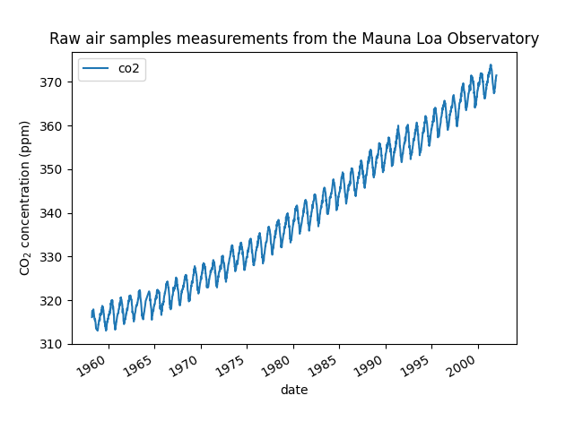

Note
Click here to download the full example code or to run this example in your browser via Binder
Gaussian process regression (GPR) on Mauna Loa CO2 data.¶
This example is based on Section 5.4.3 of “Gaussian Processes for Machine Learning” [RW2006]. It illustrates an example of complex kernel engineering and hyperparameter optimization using gradient ascent on the log-marginal-likelihood. The data consists of the monthly average atmospheric CO2 concentrations (in parts per million by volume (ppmv)) collected at the Mauna Loa Observatory in Hawaii, between 1958 and 2001. The objective is to model the CO2 concentration as a function of the time t.
The kernel is composed of several terms that are responsible for explaining different properties of the signal:
a long term, smooth rising trend is to be explained by an RBF kernel. The RBF kernel with a large length-scale enforces this component to be smooth; it is not enforced that the trend is rising which leaves this choice to the GP. The specific length-scale and the amplitude are free hyperparameters.
a seasonal component, which is to be explained by the periodic ExpSineSquared kernel with a fixed periodicity of 1 year. The length-scale of this periodic component, controlling its smoothness, is a free parameter. In order to allow decaying away from exact periodicity, the product with an RBF kernel is taken. The length-scale of this RBF component controls the decay time and is a further free parameter.
smaller, medium term irregularities are to be explained by a RationalQuadratic kernel component, whose length-scale and alpha parameter, which determines the diffuseness of the length-scales, are to be determined. According to [RW2006], these irregularities can better be explained by a RationalQuadratic than an RBF kernel component, probably because it can accommodate several length-scales.
a “noise” term, consisting of an RBF kernel contribution, which shall explain the correlated noise components such as local weather phenomena, and a WhiteKernel contribution for the white noise. The relative amplitudes and the RBF’s length scale are further free parameters.
Maximizing the log-marginal-likelihood after subtracting the target’s mean yields the following kernel with an LML of -83.214:
34.4**2 * RBF(length_scale=41.8)
+ 3.27**2 * RBF(length_scale=180) * ExpSineSquared(length_scale=1.44,
periodicity=1)
+ 0.446**2 * RationalQuadratic(alpha=17.7, length_scale=0.957)
+ 0.197**2 * RBF(length_scale=0.138) + WhiteKernel(noise_level=0.0336)
Thus, most of the target signal (34.4ppm) is explained by a long-term rising trend (length-scale 41.8 years). The periodic component has an amplitude of 3.27ppm, a decay time of 180 years and a length-scale of 1.44. The long decay time indicates that we have a locally very close to periodic seasonal component. The correlated noise has an amplitude of 0.197ppm with a length scale of 0.138 years and a white-noise contribution of 0.197ppm. Thus, the overall noise level is very small, indicating that the data can be very well explained by the model. The figure shows also that the model makes very confident predictions until around 2015.
Out:
/usr/local/lib/python3.8/dist-packages/sklearn/datasets/_openml.py:57: RuntimeWarning: Invalid cache, redownloading file
warn("Invalid cache, redownloading file", RuntimeWarning)
GPML kernel: 66**2 * RBF(length_scale=67) + 2.4**2 * RBF(length_scale=90) * ExpSineSquared(length_scale=1.3, periodicity=1) + 0.66**2 * RationalQuadratic(alpha=0.78, length_scale=1.2) + 0.18**2 * RBF(length_scale=0.134) + WhiteKernel(noise_level=0.0361)
Log-marginal-likelihood: 155.006
Learned kernel: 2.59**2 * RBF(length_scale=51) + 0.257**2 * RBF(length_scale=137) * ExpSineSquared(length_scale=2.15, periodicity=1) + 0.118**2 * RationalQuadratic(alpha=2.32, length_scale=70.6) + 0.03**2 * RBF(length_scale=1.01) + WhiteKernel(noise_level=0.001)
Log-marginal-likelihood: 1161.609
# Authors: Jan Hendrik Metzen <jhm@informatik.uni-bremen.de>
#
# License: BSD 3 clause
import numpy as np
from matplotlib import pyplot as plt
from sklearn.datasets import fetch_openml
from sklearn.gaussian_process import GaussianProcessRegressor
from sklearn.gaussian_process.kernels \
import RBF, WhiteKernel, RationalQuadratic, ExpSineSquared
print(__doc__)
def load_mauna_loa_atmospheric_co2():
ml_data = fetch_openml(data_id=41187)
months = []
ppmv_sums = []
counts = []
y = ml_data.data[:, 0]
m = ml_data.data[:, 1]
month_float = y + (m - 1) / 12
ppmvs = ml_data.target
for month, ppmv in zip(month_float, ppmvs):
if not months or month != months[-1]:
months.append(month)
ppmv_sums.append(ppmv)
counts.append(1)
else:
# aggregate monthly sum to produce average
ppmv_sums[-1] += ppmv
counts[-1] += 1
months = np.asarray(months).reshape(-1, 1)
avg_ppmvs = np.asarray(ppmv_sums) / counts
return months, avg_ppmvs
X, y = load_mauna_loa_atmospheric_co2()
# Kernel with parameters given in GPML book
k1 = 66.0**2 * RBF(length_scale=67.0) # long term smooth rising trend
k2 = 2.4**2 * RBF(length_scale=90.0) \
* ExpSineSquared(length_scale=1.3, periodicity=1.0) # seasonal component
# medium term irregularity
k3 = 0.66**2 \
* RationalQuadratic(length_scale=1.2, alpha=0.78)
k4 = 0.18**2 * RBF(length_scale=0.134) \
+ WhiteKernel(noise_level=0.19**2) # noise terms
kernel_gpml = k1 + k2 + k3 + k4
gp = GaussianProcessRegressor(kernel=kernel_gpml, alpha=0,
optimizer=None, normalize_y=True)
gp.fit(X, y)
print("GPML kernel: %s" % gp.kernel_)
print("Log-marginal-likelihood: %.3f"
% gp.log_marginal_likelihood(gp.kernel_.theta))
# Kernel with optimized parameters
k1 = 50.0**2 * RBF(length_scale=50.0) # long term smooth rising trend
k2 = 2.0**2 * RBF(length_scale=100.0) \
* ExpSineSquared(length_scale=1.0, periodicity=1.0,
periodicity_bounds="fixed") # seasonal component
# medium term irregularities
k3 = 0.5**2 * RationalQuadratic(length_scale=1.0, alpha=1.0)
k4 = 0.1**2 * RBF(length_scale=0.1) \
+ WhiteKernel(noise_level=0.1**2,
noise_level_bounds=(1e-3, np.inf)) # noise terms
kernel = k1 + k2 + k3 + k4
gp = GaussianProcessRegressor(kernel=kernel, alpha=0,
normalize_y=True)
gp.fit(X, y)
print("\nLearned kernel: %s" % gp.kernel_)
print("Log-marginal-likelihood: %.3f"
% gp.log_marginal_likelihood(gp.kernel_.theta))
X_ = np.linspace(X.min(), X.max() + 30, 1000)[:, np.newaxis]
y_pred, y_std = gp.predict(X_, return_std=True)
# Illustration
plt.scatter(X, y, c='k')
plt.plot(X_, y_pred)
plt.fill_between(X_[:, 0], y_pred - y_std, y_pred + y_std,
alpha=0.5, color='k')
plt.xlim(X_.min(), X_.max())
plt.xlabel("Year")
plt.ylabel(r"CO$_2$ in ppm")
plt.title(r"Atmospheric CO$_2$ concentration at Mauna Loa")
plt.tight_layout()
plt.show()
Total running time of the script: ( 0 minutes 9.289 seconds)